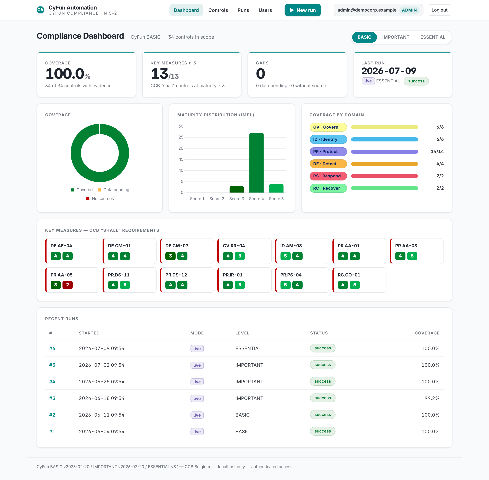
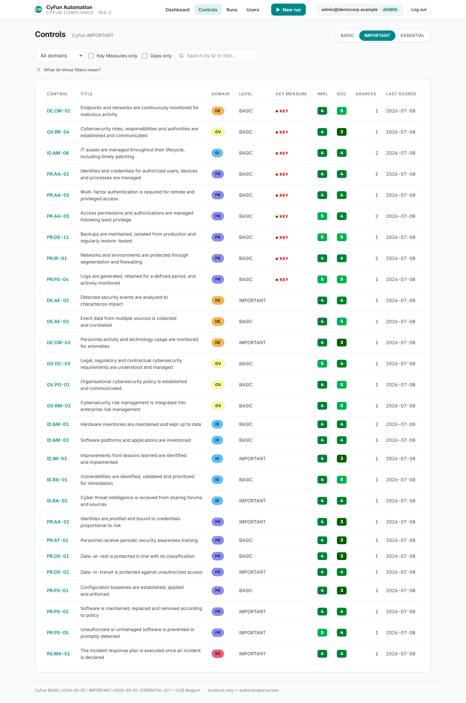
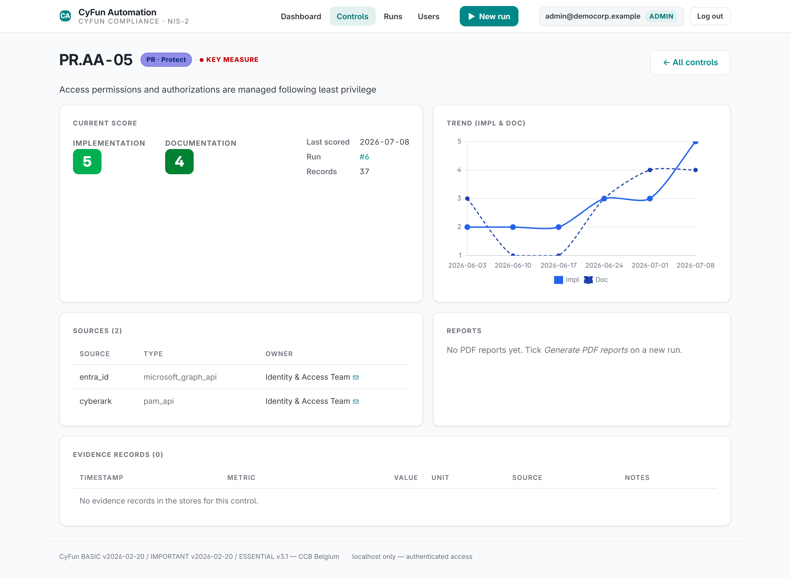
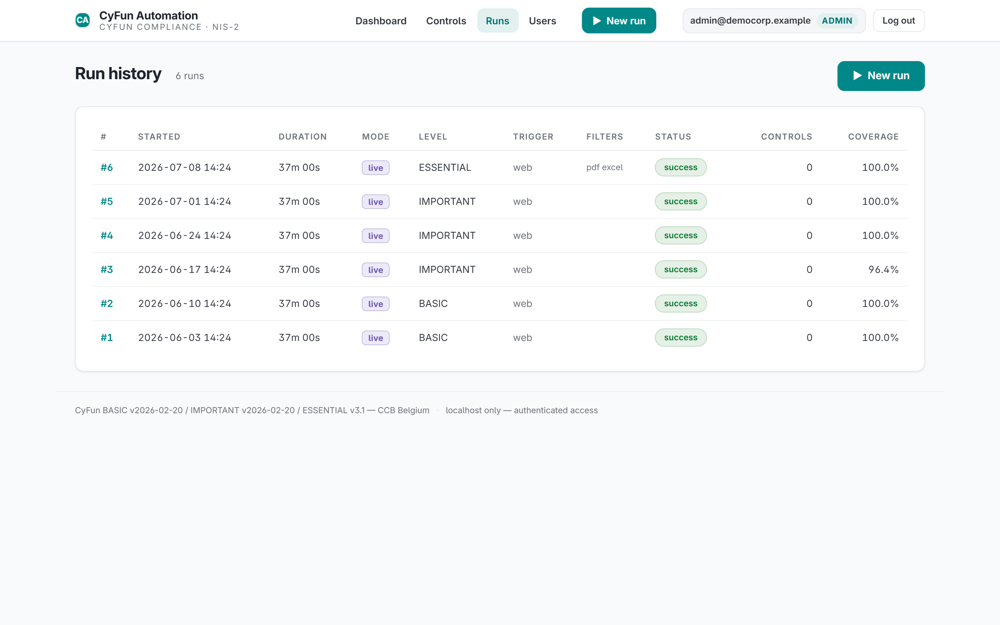

Audit-ready evidence, continuously — not once a year.
CyFun Automation turns the security systems you already run into a live, scored, auditor-ready evidence trail for the CyFun framework (CCB Belgium) and NIS-2 — always current, never a last-minute scramble.
- Read-only API connections — no agents, no new attack surface
- Every control scored 1–5 on documentation & implementation maturity
- Auditor-ready PDF + Excel output, regenerated on every run
- Gaps surface on a dashboard, not mid-audit
Four steps. No new agents on your endpoints.
Most organisations already run most of what NIS-2 asks about — identity, endpoint, backup, logging. What's usually missing isn't the tooling, it's the time and know-how to turn what those tools already know into audit-ready evidence. The pipeline reads what your security tools already know — it doesn't ask you to deploy anything new.
Connect
Read-only API connections to the identity, endpoint, network, backup and logging systems you already run — Entra ID, EDR/AV, SIEM, ITSM, backup platforms, update managers, firewalls and more.
Score
Every CyFun control is scored 1–5 on documentation and implementation maturity, mapped directly to CyFun / NIST CSF-aligned control identifiers — no manual spreadsheet wrangling.
Report
Auditor-ready evidence per control, plus a pre-filled CyFun Excel self-assessment — regenerated automatically every time the pipeline runs.
Track
A live dashboard shows coverage, open gaps and score trend over time, so leadership sees compliance posture — not just a once-a-year snapshot.
Built on the CyFun® taxonomy, end to end.
CyFun (CyberFundamentals) is the Centre for Cybersecurity Belgium's official cybersecurity framework, aligned to NIST CSF 2.0 and a registered trademark of the CCB — cyfun.eu is the authoritative source. Your tier isn't something you pick — it follows from your sector and NIS-2 classification, not how big you are. Whichever tier you land on, CyFun Automation covers it — same evidence pipeline throughout.
What the auditor — and your leadership team — actually see.
Screenshots below are from a demo instance seeded with fictional data, for illustration only.

Click to enlargeOne screen, one number: are we covered?
Coverage percentage, CCB key-measure status, maturity distribution and per-domain breakdown — refreshed on every pipeline run, not once a year before the audit.

Click to enlargeEvery control, filterable by domain or gap.
Filter by CyFun domain, key measures only, or "gaps only" to see exactly what's missing evidence — before an auditor finds it for you.

Click to enlargeScore trend, linked sources, evidence records.
Drill into any control to see its maturity trend over time, which systems feed it evidence, and who owns it internally.

Click to enlargeA full audit trail, by design.
Every evidence-collection run is logged — mode, scope, coverage, status — building the audit trail auditors ask for, automatically.
What a first NIS-2 self-assessment typically looks like once evidence stops being manual.
Based on a typical mid-size deployment across multiple security systems. Figures are illustrative, not a specific client disclosure.
Scope it in one call.
Every environment is different. A short scoping call is enough to map your existing security stack to the CyFun controls it already covers, and to size what's left — before any commitment.
Compliance shouldn't be expensive. Pricing is per connector, not by the hour — you only pay for the systems you actually connect. Onboarding is first come, first served.
Built and operated independently by Filip Truyens, a Belgium-based security & compliance consultant.